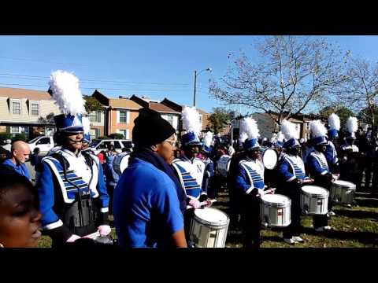

| HOME | | GALLERY | | UNIFORMS | | STICKS | | DRUMS |
Norview Drumline is composed of 4 snares, 6 basses, 3 cymbals, and 1 tenor.

Norview Drumline is composed of 4 snares, 6 basses, 3 cymbals, and 1 tenor.A drumline is a section of percussion instruments usually played as part of a musical marching ensemble. High schools have marching bands, in which there is a subcategory called the drumline. The drumline generally consists of snare drums, bass drums, tenor drums (generally referred to as quads), cymbals, pit percussion, and, in rarer cases, marching mallet percussion. the past, snares were typically carried with slings. Due to the discomfort of this angle for the left hand, a new grip was created- traditional grip. Matched grip is used in the right hand and traditional grip in the left. The stick is held with the two fingers and the thumb above the stick and two below. Most modern snare drums have rigid over-the-shoulder harnesses that hold the drum with the playing surface parallel to the ground, which affords the option of performing with matched grip.
Email:NorviewDrum@nps.k12.va.us
Phone: (757)628-3357